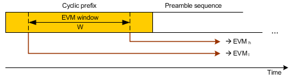

Modulation results are based on a comparison between the measured signal and an ideal reference waveform.
See also: "Modulation Accuracy"
3GPP TS 36.101, annex F defines that the EVM calculation must be based on two different FFT processing windows in the time domain, separated by the "EVM window length" W. The minimum test requirement applies to the larger of the two obtained EVM values.
The definition of the EVM window and the two FFT processing windows is shown below.

The EVM window is centered on the cyclic prefix (CP) at the beginning of the preamble. Its length is specified in the standard, depending on the preamble format (see 3GPP TS 36.101, section F.5.F).
The CP is a cyclic extension of the preamble sequence. As a consequence, the EVM for a signal with good modulation accuracy is expected to be largely independent of the EVM window size. Differences between EVMh and EVMl arise, for example, due to the effects of time domain windowing of FIR pulse shaping.

EVM window settings Use the settings in the section "Config... > Measurement Control > Modulation > EVM Window Length" to adjust the length of the EVM window (see "EVM Window Length"). The minimum value of one FFT symbol means that EVMh = EVMl. Use the setting "Config... > Measurement Control > Modulation > EVM Window Position" to select whether the result diagrams (traces) are calculated for low or high EVM window position, see "EVM Window Position". Statistical tables provide results for both window positions. |